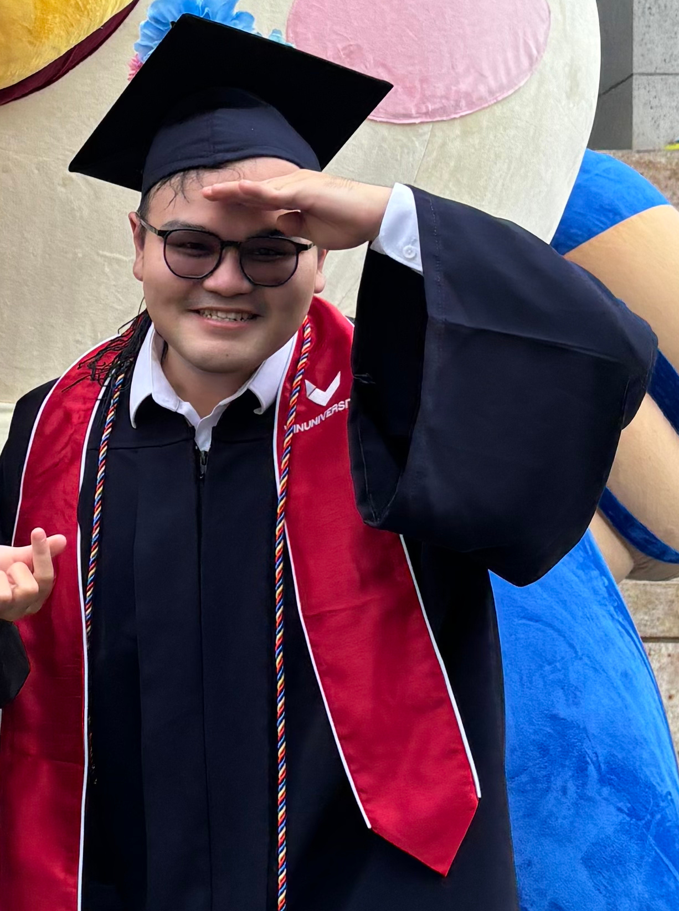

Khoi T. N. Nguyen
I'm interested in hierarchical reasoning, representation learning, and their broad applications in robotics, automatic workflow, and assistive technologies. I'm currently working at NTU under the supervision of Professor Domenico Campolo.
Previously, I worked in the industry as a Data Scientist at Cốc Cốc, the only Vietnamese search engine and browser. At Cốc Cốc, I developed ML models and product features to impact 30M users with 600M monthly search traffic. I learned a lot under the guidance of anh Hoa Nguyen Tat and other talented colleagues.
I gained some research experiences during my undergraduate years. I was a Research Intern at I2R, A*STAR, under the supervision of Dr. Zhang Wenyu. I was also a Research Assistant at VinUniversity, supervised by Professor Truong Do.
LinkedIn Google Scholar Resume GitHubEducation
School of Computing, National University of Singapore
Ph.D. in Computer Science
College of Engineering and Computer Science, VinUniversity
B.Sc. in Computer Science, AI Concentration. Minor in Finance.
Experience
Work Experience
Nanyang Technological University
AI Researcher
Motion representation learning. AI agent systems for clinical assistance.
Supervisor: Prof. Domenico Campolo
Cốc Cốc Browser & Search Engine
Data Scientist
ML training and distillation. Agentic workflow for search AI answering.
I learned a lot from: anh Hoa Nguyen Tat, em Binh Le Thanh, Mr. Kostin Mikhail, and other colleagues.
VinUni-UIUC Smart Health Center, VinUniversity
Research Assistant
Representation learning for 3D scene graph. Embodied robot navigation with small language models.
Supervisor: Prof. Truong Do, Asst. Prof. Son Hy
Institute for Infocomm Research, A*STAR Singapore
Research Intern
Adversarial attacks on object detection. Research internship under the SIPGA Award.
Supervisor: Dr. Zhang Wenyu
Previous Internships
Cốc Cốc Browser & Search Engine
Data Scientist Intern
FPT Software
Python Developer Intern
Publications & pre-prints
OGA-AID: Clinician-in-the-loop AI Assistant for Multimodal Gait Analysis in Post-Stroke Rehabilitation
CV4Clinic CVPR Workshop Proceedings
SmallPlan: Leverage Small Language Models for Path Planning with LLM-Guided Distillation
Pre-print
TESGNN: Temporal Equivariant Scene Graph Neural Networks for Multi-View 3D Scene Understanding
Transactions on Machine Learning Research (TMLR)
A Survey and Evaluation of Adversarial Attacks for Object Detection
IEEE Transactions on Neural Networks and Learning Systems (TNNLS)
Activities
Served as reviewer for IEEE ICRA 2025, Springer IJCV 2026
Hosted sharing sessions for 5 mentees on career paths in ML/AI.
Guided LLMs code lab for 500+ attendees at 2 Google events.
Hosted STEM events for 8,000 students.